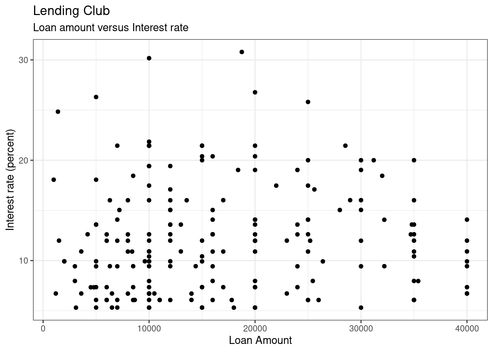
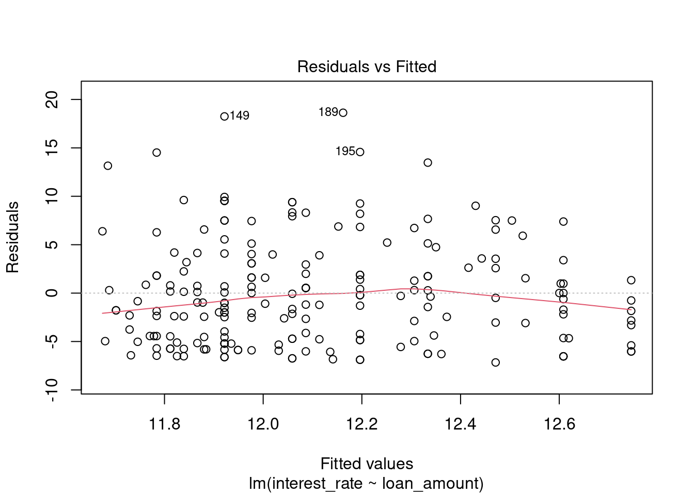
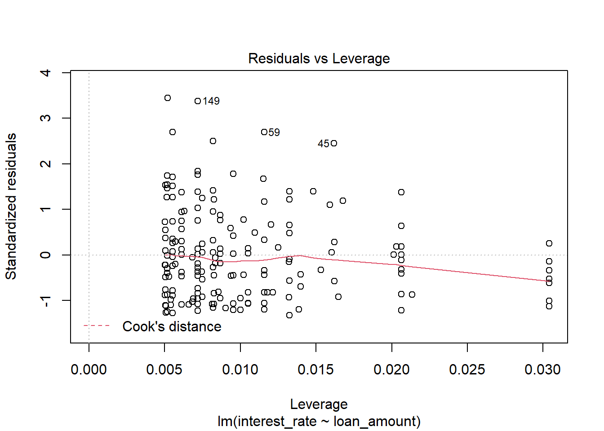
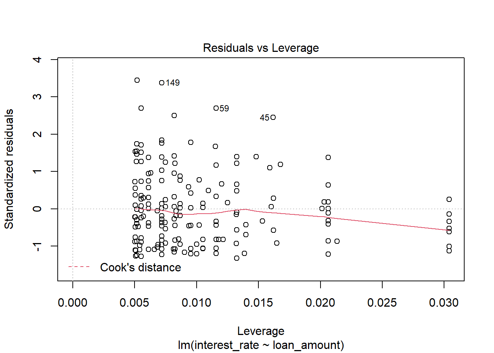
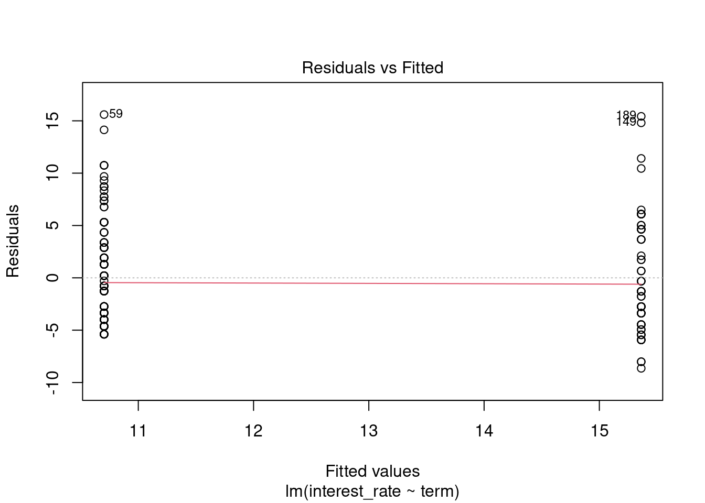
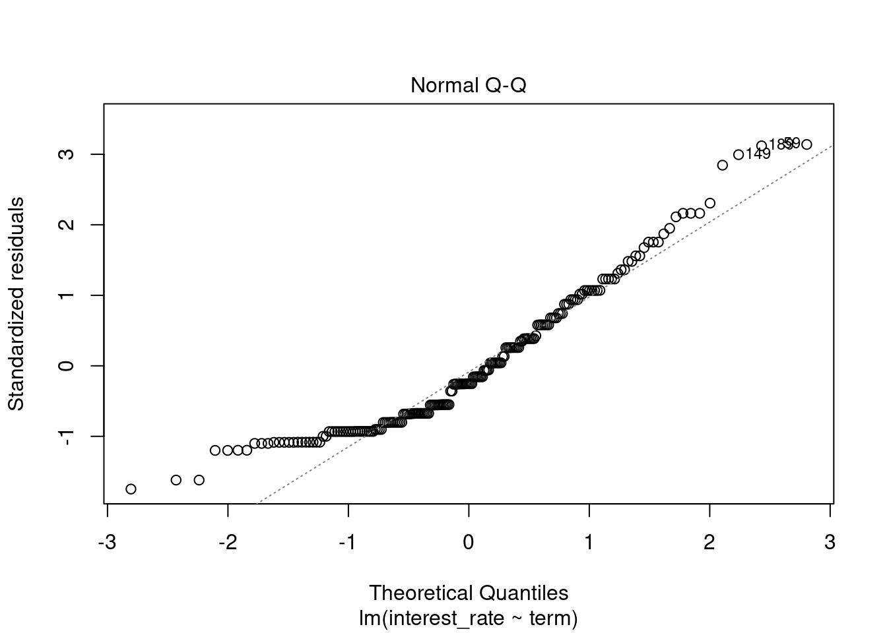
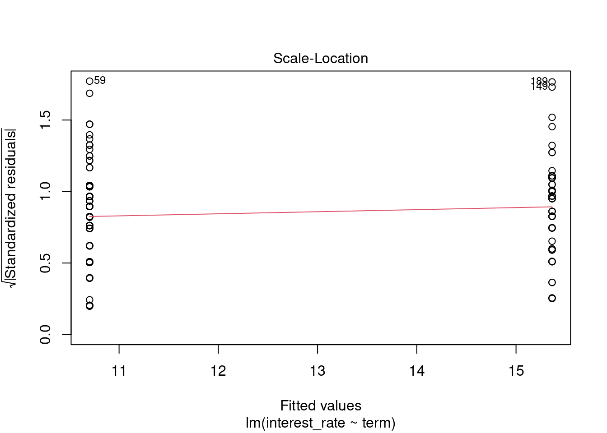
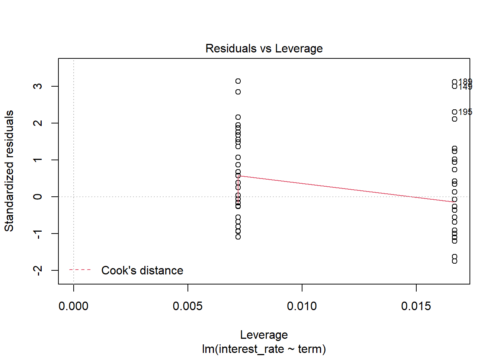

Chapter 27 Simulation Based Linear Regression
27.1 Objectives
- Using the bootstrap, generate confidence and estimates of standard error for parameter estimates from a linear regression model.
- Generate and interpret bootstrap confidence intervals for predicted values.
- Generate bootstrap samples from sampling rows of the data or sampling residuals. Explain why you might prefer one over the other.
- Interpret regression coefficients for a linear model with a categorical explanatory variable.
27.2 Homework
We will use the loans data set again to create linear models. Remember this data set represents thousands of loans made through the Lending Club platform, which is a platform that allows individuals to lend to other individuals.
27.2.1 Problem 1
Loans
In this exercise we will examine the relationship between interest rate and loan amount.
- Read in the data from
loans.csvin thedatafolder.
loans <- read_csv("data/loans.csv")- Create a subset of data with 200 with the following three variables
interest_rate,loan_amount, andterm. Changeterminto a factor and use a stratified sample to keep the proportion of loan term roughly the same as the original data.
tally(~term,data=loans,format="percent")## term
## 36 60
## 69.7 30.3set.seed(2111)
loans200 <- loans %>%
select(interest_rate,loan_amount,term) %>%
mutate(term=factor(term)) %>%
group_by(term) %>%
slice_sample(prop=0.02) %>%
ungroup()tally(~term,data=loans200,format="percent")## term
## 36 60
## 69.84925 30.15075str(loans200)## tibble [199 × 3] (S3: tbl_df/tbl/data.frame)
## $ interest_rate: num [1:199] 13.59 9.92 17.47 10.9 7.34 ...
## $ loan_amount : num [1:199] 13000 10000 10000 8400 4800 10000 6000 6300 10000 32000 ...
## $ term : Factor w/ 2 levels "36","60": 1 1 1 1 1 1 1 1 1 1 ...- Plot
interest_rateversusloan_amount. We thinkinterest_rateshould be the response.
It seems natural that you would want to predict interest rate from loan amount.
ggplot(loans200,aes(x=loan_amount,y=interest_rate)) +
geom_point() +
labs(title="Lending Club",subtitle="Loan amount versus Interest rate",
x="Loan Amount",y="Interest rate (percent)") +
theme_bw()
- Fit a linear model to the data by regressing
interest_rateonloan_amount. Is there a significant relationship betweeninterest_rateandloan_amount?
int_rate_mod <- lm(interest_rate~loan_amount,data=loans200)summary(int_rate_mod)##
## Call:
## lm(formula = interest_rate ~ loan_amount, data = loans200)
##
## Residuals:
## Min 1Q Median 3Q Max
## -7.1611 -4.6842 -0.9666 3.0685 18.6280
##
## Coefficients:
## Estimate Std. Error t value Pr(>|t|)
## (Intercept) 1.165e+01 7.337e-01 15.874 <2e-16 ***
## loan_amount 2.748e-05 3.722e-05 0.738 0.461
## ---
## Signif. codes: 0 '***' 0.001 '**' 0.01 '*' 0.05 '.' 0.1 ' ' 1
##
## Residual standard error: 5.423 on 197 degrees of freedom
## Multiple R-squared: 0.002759, Adjusted R-squared: -0.002303
## F-statistic: 0.545 on 1 and 197 DF, p-value: 0.4613To test if there a significant relationship between interest_rate and loan_amount, we test if \(\beta_1 = 0\). The p-value for this is 0.4613, so we fail to reject that there is no relationship between interest_rate and loan_amount.
- Using the \(t\) distribution:
- Find a 95% confidence interval for the slope.
- Find and interpret a 90% confidence interval for a loan amount of $20000.
- Find a 95% confidence interval for the slope.
confint(int_rate_mod)## 2.5 % 97.5 %
## (Intercept) 1.019986e+01 1.309374e+01
## loan_amount -4.592357e-05 1.008748e-04We are 95% confident the true slope is between -4.592357e-05 and 1.008748e-04.
predict(int_rate_mod,newdata = data.frame(loan_amount=20000),
interval = "confidence",level=0.90)## fit lwr upr
## 1 12.19631 11.53105 12.86157We are 90% confident that the average interest rate for a loan of $20000 is between 11.5% and 12.9%.
- Repeat part e using a bootstrap.
set.seed(3011)
results <- do(1000)*lm(interest_rate ~ loan_amount,data=resample(loans200))head(results)## Intercept loan_amount sigma r.squared F numdf dendf .row
## 1 10.26651 6.837311e-05 4.893962 0.0184148594 3.69578466 1 197 1
## 2 11.63858 2.341492e-05 5.147715 0.0021348812 0.42147139 1 197 1
## 3 12.52116 6.096805e-06 5.138114 0.0001537970 0.03030266 1 197 1
## 4 11.93790 -6.489195e-06 5.284324 0.0001655171 0.03261227 1 197 1
## 5 11.38254 9.000912e-05 5.472851 0.0281911082 5.71475355 1 197 1
## 6 12.35924 -2.568690e-05 5.520788 0.0025489432 0.50342501 1 197 1
## .index
## 1 1
## 2 2
## 3 3
## 4 4
## 5 5
## 6 6cdata(~loan_amount,data=results)## lower upper central.p
## 2.5% -4.277717e-05 9.863203e-05 0.95Or using the infer package:
results2 <- loans200 %>%
specify(interest_rate~loan_amount) %>%
generate(reps=1000,type="bootstrap") %>%
calculate(stat="slope")
head(results2)## Response: interest_rate (numeric)
## Explanatory: loan_amount (numeric)
## # A tibble: 6 × 2
## replicate stat
## <int> <dbl>
## 1 1 -0.0000114
## 2 2 0.0000198
## 3 3 0.0000207
## 4 4 0.00000481
## 5 5 0.0000549
## 6 6 0.0000531get_confidence_interval(results2)## Using `level = 0.95` to compute confidence interval.## # A tibble: 1 × 2
## lower_ci upper_ci
## <dbl> <dbl>
## 1 -0.0000361 0.0000947Now the confidence interval for average interest rate at a loan amount of 20000:
results %>%
mutate(pred=Intercept+loan_amount*20000) %>%
cdata(~pred,data=.)## lower upper central.p
## 2.5% 11.4061 13.01508 0.95Again, close to what we had but slightly different. Maybe some of the assumptions such as normality are not appropriate.
- Check the assumptions of linear regression.
plot(int_rate_mod)
 

There appears to be a lack of normality as the residuals are skewed to the right, large positive residuals. The bootstrap would probably be more appropriate for this problem.
27.2.2 Problem 2
Loans II
Using the loans data set of 200 observations from the previous exercise, use the variable term to determine if there is a difference in interest rates for the two different loan lengths.
- Build a set of side-by-side boxplots that summarize interest rate by term. Describe the relationship you see. Note: You will have to convert the
termvariable to a factor prior to continuing.
loans200 %>%
gf_boxplot(interest_rate~term) %>%
gf_theme(theme_classic()) %>%
gf_labs(title="Lending Club",x="Length of Loan",y="Interest Rate")
It looks like there is a difference in interest rate based on the length of the loan. It also appears both are skewed to the right, positive skew. Let’s plot the density and see what we find.
loans200 %>%
gf_dens(~interest_rate,group=~term,color=~term) %>%
gf_theme(theme_classic()) %>%
gf_labs(title="Lending Club",x="Interest Rate",y="Density")
Just as we thought.
- Build a linear model fitting interest rate against term. Does there appear to be a significant difference in mean interest rates by term?
int_rate_mod2 <- lm(interest_rate~term,data=loans200)summary(int_rate_mod2)##
## Call:
## lm(formula = interest_rate ~ term, data = loans200)
##
## Residuals:
## Min 1Q Median 3Q Max
## -8.643 -3.993 -1.263 3.132 15.597
##
## Coefficients:
## Estimate Std. Error t value Pr(>|t|)
## (Intercept) 10.7031 0.4230 25.304 < 2e-16 ***
## term60 4.6601 0.7703 6.049 7.19e-09 ***
## ---
## Signif. codes: 0 '***' 0.001 '**' 0.01 '*' 0.05 '.' 0.1 ' ' 1
##
## Residual standard error: 4.987 on 197 degrees of freedom
## Multiple R-squared: 0.1567, Adjusted R-squared: 0.1524
## F-statistic: 36.6 on 1 and 197 DF, p-value: 7.189e-09There is a significant difference between the average interest rate based on the length of the loan.
- Write out the estimated linear model. In words, interpret the coefficient estimate.
The intercept \(\beta_\text{Intercept} = \mu_\text{term36}\) is the average interest rate for a 36 month loan. And \(\beta_\text{term60} = \mu_\text{term60} - \mu_\text{term36}\) is the difference in average interest rates between loan length. In this case, a 60 month loan is 4.66 percentage points higher on average than a 36 month loan.
- Construct a bootstrap confidence interval on the coefficient.
set.seed(331)
results <- do(1000)*lm(interest_rate ~ term,data=resample(loans200))
head(results)## Intercept term60 sigma r.squared F numdf dendf .row .index
## 1 10.11890 4.903166 4.534598 0.20352136 50.33871 1 197 1 1
## 2 10.91695 5.275981 5.220399 0.17564679 41.97523 1 197 1 2
## 3 11.07592 4.064085 5.226607 0.11097921 24.59212 1 197 1 3
## 4 11.14948 3.675445 5.250290 0.09818999 21.44956 1 197 1 4
## 5 10.45978 4.941671 4.960234 0.17698753 42.36454 1 197 1 5
## 6 11.02597 4.232862 4.891180 0.13743012 31.38729 1 197 1 6cdata(~term60,data=results)## lower upper central.p
## 2.5% 3.029483 6.242261 0.95We are 95% confident the difference in average interest rates for loans of 60 month and 36 month is between 3.03% and 6.24%.
Let’s check using the assumption of normally distributed errors.
confint(int_rate_mod2)## 2.5 % 97.5 %
## (Intercept) 9.868936 11.537251
## term60 3.140928 6.179218Close, but slightly narrower.
- Check model assumptions.
plot(int_rate_mod2)
Because of the discrete nature of the predictor, only the first two plots are of interest. The assumption of constant variable does seem reasonable but the assumption of normally distributed errors is not. We have a positive skewness.